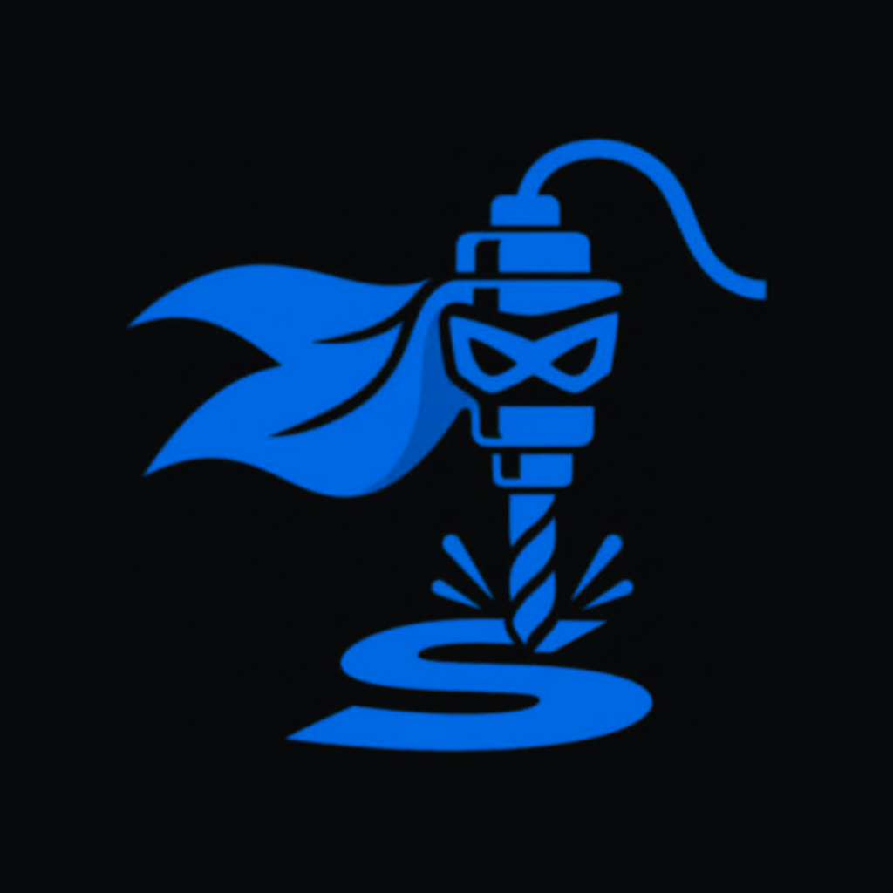

CNC SidekickSupport
Contact
Email deckedoutdisplays@proton.me — include your phone model and, for a File Check question, the bit and material you picked.
Common questions
Do I need an account? No. Everything works signed out and stays on your device. An account only adds sync between your devices.
Forgot your password? On the sign-in screen, enter your email and tap “Forgot password?”, then open the email on your phone.
Moving to a new phone without an account? You → Backup & data → Export backup, then Import backup on the new phone.
Safety
Feeds, speeds, depths and File Check verdicts are estimates from published manufacturer data and CNC Sidekick’s own model. They can be wrong for your bits, material or machine. Always check against your tooling manufacturer’s guidance, start conservatively, and stay with the machine. You are responsible for how your machine is set up and run.